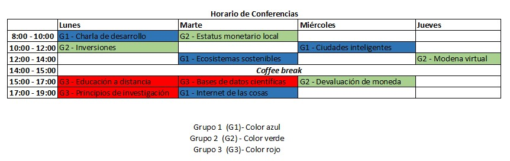
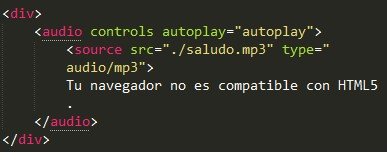

Pauta 1.4 Distinguible
Facilitar a los usuarios a ver y oir el contenido incluyendo la separación entre el primer plano y el fondo.
La información y los componentes de la interfáz de usuario deben ser presentados a los usuarios de modo que ellos puedean percibirlos
Facilitar a los usuarios a ver y oir el contenido incluyendo la separación entre el primer plano y el fondo.
El color no se usa como único medio visual para transmitir la información, indicar una acción, solicitar una respuesta o distinguir un elemento visual.
En un horario de conferencias se agrupan en 3 grupos, distinguibles cada una por un color, azul par ael grupo 1, verde para el grupo 2 y rojo para el grupo 3. Además de esto, se debe colocar un código que identifique cada grupo de conferencias antes o despues del nombre de la conferencias, G1 para grupo 1, G2 para grupo 2 y G3 para grupo 3.
Si el audio de una página web suena automáticamente durante más de 3 segundos, se proporcionará ya sea un mecanismo para pausar o detener el audio, o un mecanismo para controlar el columen del sonido que es independiente del nivel de volumen global del sistema.
Una página web de una distribuidora de computadoras, que al ingresar a ella se oye una frase "COMPUPART la calidad al mejor precio" y luego se apaga; o una página que indique un sonido de fondo al abrirla que no dure más de 3 segundos para permitir a las personas con discapacidad visual escuchar a su lector de pantalla.
